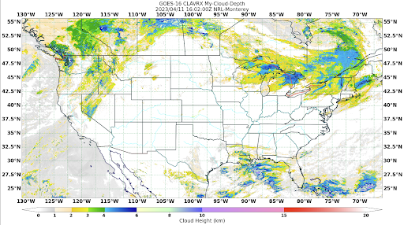

Distribution Statement
Extend GeoIPS with a New Gridline Annotator#
GeoIPS Gridline Annotators describe the format of the grid lines shown in your imagery. Every image you’ve created using GeoIPS so far has employed the default GeoIPS Gridline Annotator. This serves well for tutorial purposes, but may be mundane for your own purposes. For that reason, we allow users to create their own custom YAML-based Gridline Annotator Plugins, which we’ll show you how to do that here.
- Gridline Annotators control the following properties of your imagery:
labelsand which to displaylines, such as theircolor,linestyle, andlinewidthspacing, such as the distance betweenlatitudeandlongitudelabels, and the gridlines that represent them.
The top level attributes
interface, family, and docstring
are required in every GeoIPS plugin.
Please see documentation for additional info on these GeoIPS required attributes
An Example Gridline Annotator#
Shown below, is the default gridline annotator plugin that you have been using when producing your own imagery.
interface: gridline_annotators
family: cartopy
name: default
docstring: |
The default gridline_annotators plugin. Top and left gridline labels,
latitude and longitude lines colored black, auto spacing, 1px linewidth, and
[4, 2] linestyle.
spec:
labels:
top: true
bottom: false
left: true
right: false
lines:
color: black
linestyle: [4, 2]
linewidth: 1
spacing: # can also be a float
latitude: auto
longitude: auto
Notice the family: cartopy property in the yaml file shown above. This is the only
family available for both gridline annotators and feature annotators, as the backend of
GeoIPS makes use of cartopy functions to create your gridlines and features shown in
your imagery.
Creating a New Gridline Annotator#
Now that we’re familiar with the structure of gridline annotator plugins, let’s create one of our own. Feel free to get creative here, feel no need to copy this verbatim. This is your gridline annotator, and you get to make the choices! Just make sure that your color is a matplotlib named color or a hexidecimal string.
Run the series of commands shown below to create a directory for your gridline annotators.
mkdir -pv $MY_PKG_DIR/$MY_PKG_NAME/plugins/yaml/gridline_annotators
cd $MY_PKG_DIR/$MY_PKG_NAME/plugins/yaml/gridline_annotators
Now, create a file called tutorial.yaml in that directory, which
we will update to our own specifications. Here is an example of a new Gridline Annotator:
interface: gridline_annotators
family: cartopy
name: tutorial
docstring: |
The tutorial gridline_annotators configuration. All gridline labels enabled,
latitude and longitude lines colored mediumseagreen, 2.5 degree spacing, 1px
linewidth, and [5, 3] linestyle
spec:
labels:
top: true
bottom: true
left: true
right: true
lines:
color: mediumseagreen
linestyle: [5, 3] # Refers to [dash_width_px, dash_spacing_px]
linewidth: 1
spacing:
latitude: 2.5
longitude: 2.5
Creating a Script to Visualize our Gridline Annotator#
Now that we have a custom gridline annotator, use it in your My-Cloud-Depth workflow
(from the Products/Cloud-Depth Section) by adding a
gridline_annotator step and depending on it from the annotated output formatter
(replace tutorial with your plugin name):
steps:
# ... your existing sector / reader / product / filename_formatter steps ...
gridlines:
kind: gridline_annotator
name: tutorial
output_formatter:
kind: output_formatter
name: imagery_annotated
depends_on:
- clavrx_My_Cloud_Depth.algorithm
- clavrx_My_Cloud_Depth.colormapper
- gridlines
- sector
Then run the workflow:
geoips run order_based my_cloud_depth \
$GEOIPS_TESTDATA_DIR/test_data_clavrx/data/goes16_2023101_1600/*.hdf
Alternatively, apply your annotator at run time without editing the workflow with a global
override: -g gridline_annotator=tutorial.
This will output a series of log output. If your script succeeded it will end with INFO: Return Value 0. To view your output, look for the output image path printed in the log. Open the PNG file to view your Cloud Depth Image! It should look like the image shown below.
Note: The image shown below also makes use of the custom Feature Annotator created in the Feature Annotator Section. Feel free to complete that if you would like, however you still will be able to notice the changes from your new Gridline Annotator.
{kind=link}
